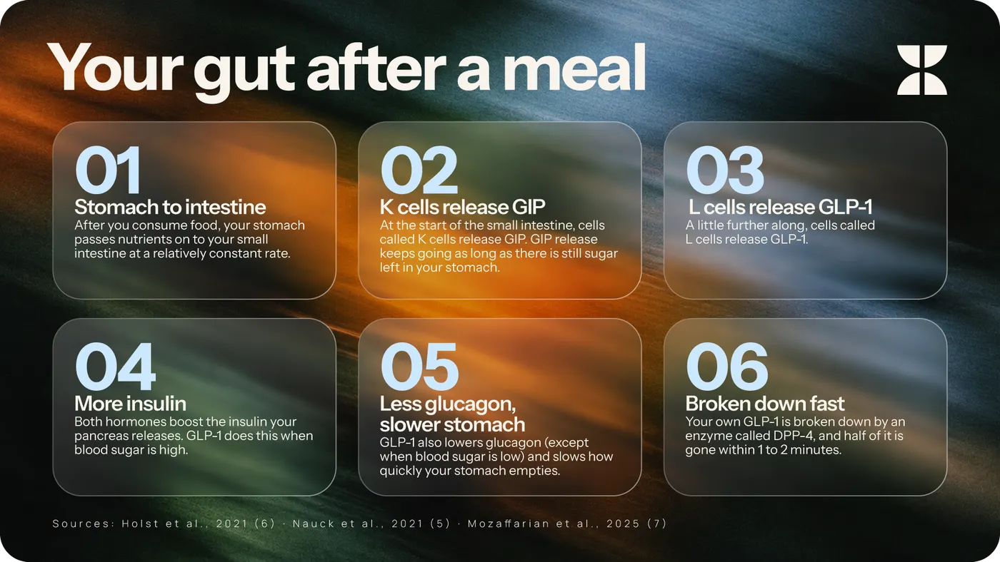
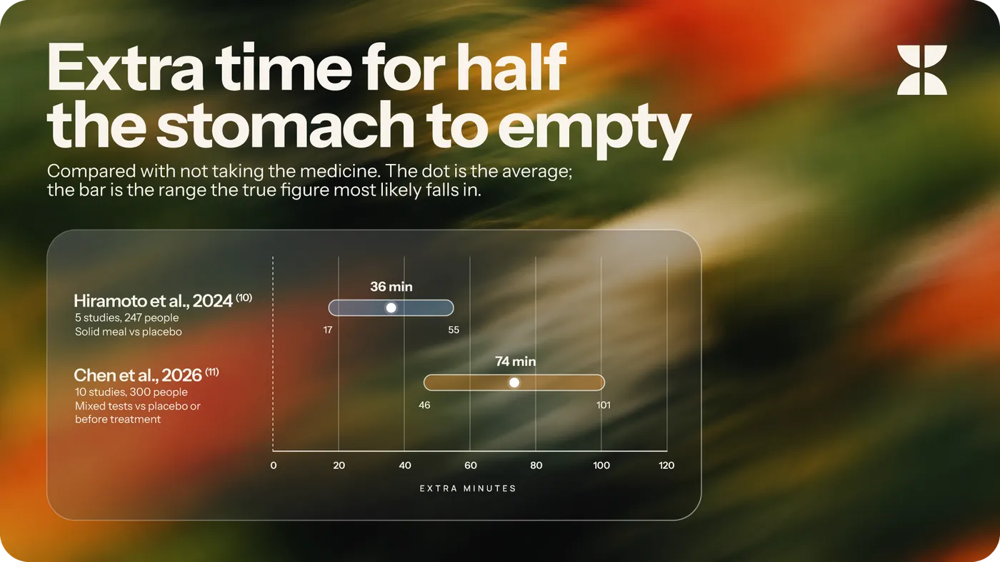
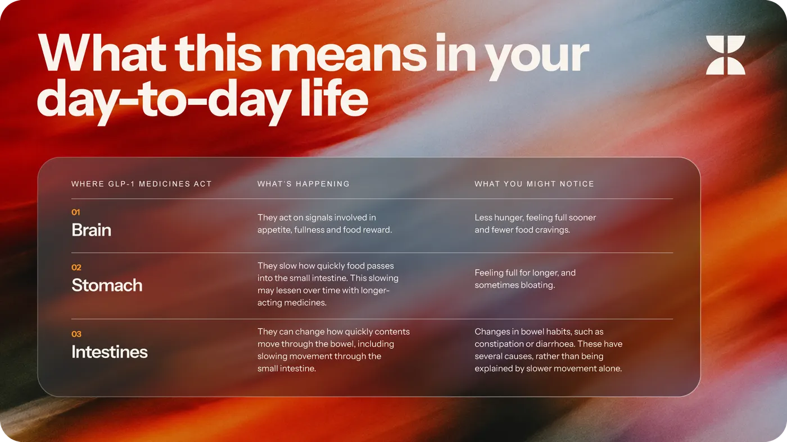

How GLP-1 medicines work
What happens when you take them and why
Lotta Team ·
Chances are that you’ve been hearing about GLP-1 a lot lately.
For some of you, it’s already part of your day-to-day life and, for others, it’s still in the realm of unknown medical jargon or something heard of in passing on social media.
The name might be new, but the hormone behind it isn’t. GLP-1 (glucagon-like peptide-1) is a hormone you produce in your gut every day whenever you eat and scientists have been studying it since the 1980s. The first medication designed to copy it was approved in 2005 and until the mid-2010s, GLP-1 medications were mostly used to help control blood sugar levels.
After large trials identified their effect on weight, and later on heart and kidney risk, scientists and medical professionals began exploring them as treatment options for a wider range of conditions. Along the way, GLP-1 medications rose in popularity, moving from their usual clinical setting to your group chat.
Exactly how many people take these medications is surprisingly hard to pin down but where pharmacy prescriptions are recorded the rise is clear. In Sweden, the number of people collecting GLP-1 medicines went from around 53,000 in 2019 to 294,000 in 2025. (1) In the UK, in a single year, 2.9% of adults, roughly 1.6 million people, used one to help them with their weight-loss. (2) In the USA, the share of adults currently taking one doubled from 6% to 12% between spring 2024 and late 2025. (3) (4)
But popularity doesn’t always translate into reliable information; it’s easy to get lost in the midst of Instagram reels and podcasts.
Whether you’re just starting your journey with GLP-1 medications or considering if it’s something that works for you, it’s essential to understand what they do and how they can impact you.
How GLP-1 works
After a meal, as food moves from your stomach into your intestine, your body releases two gut hormones: GLP-1 and GIP. (5) (6)
GIP and GLP-1 both signal the pancreas to release insulin, helping to regulate blood sugar (6). In healthy people, GIP contributes more to this insulin response. GLP-1 also slows down how quickly your stomach empties (5) and acts on your brain to help regulate appetite and how much you eat. (7)
During this process, the GLP-1 is quickly broken down by an enzyme called DPP-4 (dipeptidyl peptidase-4). Within just 1-2 minutes, half of the active GLP-1 has been broken down, a period known as its “half-life”. This means that its effects are short-lived. (5) (7)
This is where GLP-1 receptor agonists, commonly known as GLP-1 medicines, come in.

GLP-1 medicines mimic your natural GLP-1 but are designed to resist being broken down as quickly, so that its effects last longer in your body. (5) For the weekly medications, it takes about 5 to 7 days for half of the medicine to leave your body, so levels stay fairly steady between doses. (5)
They reduce appetite, increase fullness and slow how quickly your stomach empties, though with longer-acting medications this slowing appears to lessen over time as your body adapts. (5) (8)
This also helps with what is commonly known as “food noise” (persistent or intrusive thoughts about food) by acting on the brain pathways involved in appetite regulation and food reward.
Based on one study, people on weekly GLP-1 medications felt less hungry and fuller in the hours after a meal than people on placebo (a treatment that looks like the medication being tested but contains no active medicine, like a dummy injection or pill). (9) In trials, people on the medication took in 16% to 39% fewer calories than people on the placebo. (7)
What studies found
Two reviews have analysed studies on the effects of GLP-1s recently:
- The first combined five studies involving 247 people. It found that the time taken for half a solid meal to leave the stomach was 36 minutes longer with these medicines than with placebo. The authors described this as a mild delay. (10)
- A 2026 analysis combined 10 studies involving 300 people. It found an average delay of 74 minutes, with a trend towards greater slowing during the first 10 weeks of treatment. However, the studies used different testing methods. (11)
Extra time for half the stomach to empty

What this means in your day-to-day

In a longer-term view, as you lose weight, you may lose muscle mass and bone density alongside fat. Resistance training and an adequate protein intake can help preserve them during weight loss.
When to talk to someone
Your prescriber or pharmacist can answer questions about your medication, including how to take it, your dose and how to manage any side effects. You can also understand more about what to expect from your own medication and brand on its leaflet.
Sources
- Socialstyrelsen, 2026 · national prescription register
- Jackson et al., 2026 · population survey
- KFF, 2024 · national poll
- KFF, 2025 · national poll
- Nauck et al., 2021 · review
- Holst et al., 2021 · review
- Mozaffarian et al., 2025 · expert advisory
- Jalleh et al., 2025 · review
- Friedrichsen et al., 2021 · randomised controlled trial
- Hiramoto et al., 2024 · systematic review and meta-analysis
- Chen et al., 2026 · systematic review and meta-analysis